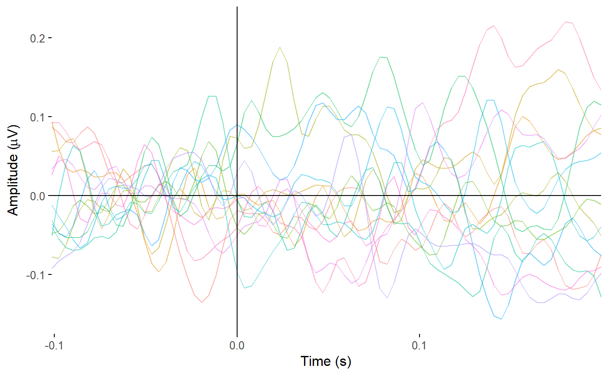
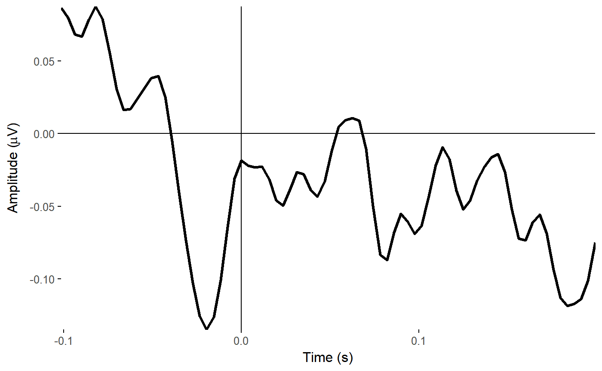
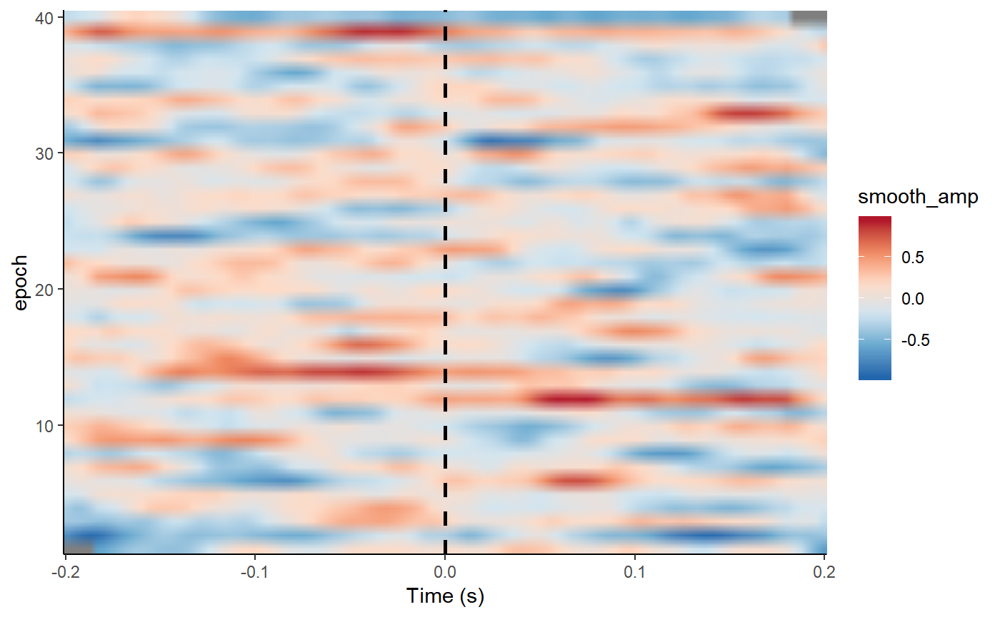

This package was created to allow the analysis of EEG data in R. The code in this vignette was previously published on Matt’s blog.
Two example Biosemi bdf files can be downloaded from the producer’s website. To download and unzip example bdf files use:
url_bdf_zip <- "https://www.biosemi.com/download/BDFtestfiles.zip"
temp <- tempfile()
download.file(url_bdf_zip, temp)
unzip(temp)
unlink(temp)library(eegUtils)
library(dplyr)
bdf_filename <- "Newtest17-256.bdf"
bdf_data <- import_raw(bdf_filename)The file is now loaded. You can see its structure
str(bdf_data)## List of 7
## $ signals :Classes 'tbl_df', 'tbl' and 'data.frame': 15360 obs. of 16 variables:
## ..$ A1 : num [1:15360] -527 -522 -526 -529 -532 ...
## ..$ A2 : num [1:15360] -595 -593 -589 -585 -582 ...
## ..$ A3 : num [1:15360] -124 -122 -119 -115 -111 ...
## ..$ A4 : num [1:15360] -774 -772 -768 -764 -760 ...
## ..$ A5 : num [1:15360] -467 -465 -461 -457 -453 ...
## ..$ A6 : num [1:15360] -646 -644 -640 -636 -632 ...
## ..$ A7 : num [1:15360] -611 -609 -605 -600 -597 ...
## ..$ A8 : num [1:15360] 49.6 52 54.4 59.6 63.3 ...
## ..$ A9 : num [1:15360] -104.6 -102.6 -99.4 -94.6 -91 ...
## ..$ A10: num [1:15360] -353 -350 -346 -342 -338 ...
## ..$ A11: num [1:15360] -352 -349 -346 -342 -338 ...
## ..$ A12: num [1:15360] -133 -132 -129 -123 -120 ...
## ..$ A13: num [1:15360] -171 -169 -166 -162 -158 ...
## ..$ A14: num [1:15360] -654 -652 -647 -644 -641 ...
## ..$ A15: num [1:15360] -574 -572 -569 -564 -561 ...
## ..$ A16: num [1:15360] -224 -221 -218 -213 -209 ...
## $ srate : num 256
## $ events :Classes 'tbl_df', 'tbl' and 'data.frame': 40 obs. of 3 variables:
## ..$ event_onset: num [1:40] 415 823 1197 1590 2012 ...
## ..$ event_time : num [1:40] 1.62 3.21 4.67 6.21 7.86 ...
## ..$ event_type : num [1:40] 255 255 255 255 255 255 255 255 255 255 ...
## $ chan_info : NULL
## $ timings :Classes 'tbl_df', 'tbl' and 'data.frame': 15360 obs. of 2 variables:
## ..$ sample: int [1:15360] 1 2 3 4 5 6 7 8 9 10 ...
## ..$ time : num [1:15360] 0 0.00391 0.00781 0.01172 0.01562 ...
## $ continuous: logi TRUE
## $ reference : NULL
## - attr(*, "class")= chr "eeg_data"eegUtils allows loading the bdf files, selecting channels
my_data <- bdf_data %>%
select_elecs(c("A1", "A2"), keep = FALSE) %>% # remove channels
reref_eeg(ref_chans = "average") %>% # re-reference
iir_filt(low_freq = 0.1, high_freq = 40) %>% # band-pass filter
epoch_data(255, c(-.2,.2)) # epoch: choose a trigger and time limits## Band-pass IIR filter from 0.1-40 HzCreate a butterfly plot showing data from all the electrodes
plot_butterfly(my_data, baseline = c(-.2, 0), time_lim = c(-.1, .2), legend = FALSE)## Joining, by = "electrode"
Or the timecourse of a single electrode
plot_timecourse(my_data, electrode = "A3", baseline = c(-.2,0), time_lim = c(-.1, .2))## Joining, by = c("epoch", "electrode")
How about an EEGLAB style ERP image?
erp_image(my_data, electrode = "A9")